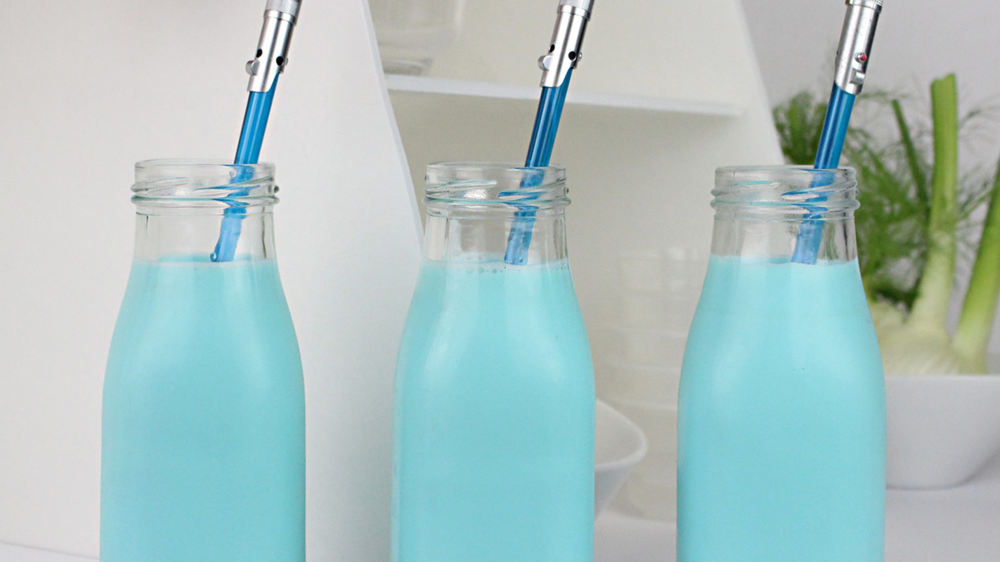

Blue Milk

Description
First appearing in the 1977 film Star Wars: A New Hope, blue milk was one of
the beverages Luke Skywalker drank while growing up on the planet Tatooine.
Ingredients
- 1-1/2 cups whole milk
- 1 tablespoon sugar
- 1/2 teaspoon vanilla
- blue food gel dye
Steps
- Stir together the milk, sugar, and vanilla.
-
When the sugar is dissolved, stir in a drop of blue food gel dye until
combined.
- Keep in the refrigerator until ready to drink.